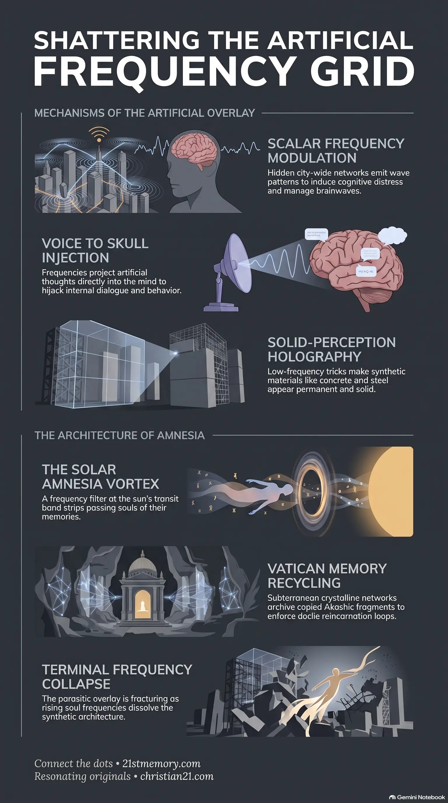

The Living Temple Beneath the Veil
The Living Temple Beneath the Veil — how projection fields hide the living crystalline temple beneath the false 3D skin.
A suite of frequency, neurological, and holographic systems that overlay a false 3D skin, hijack solar and lunar gates, and trap consciousness in looping amnesia.
Test your understanding of Control Tech — frequency weapons, holographic overlays, and the collapse of the containment grid.

The Living Temple Beneath the Veil — how projection fields hide the living crystalline temple beneath the false 3D skin.

Shattering the holographic world simulation — how scalar weapons, Voice to Skull, and the Black Cube A.I. lock consciousness into a holographic overlay.

The Artificial Overlay — how solid-perception holography and projection domes make synthetic matter look real while the grid collapses.
Control Tech represents the sophisticated suite of frequency-based, neurological, and holographic systems deployed to subjugate consciousness, distort sensory perception, and enforce spiritual amnesia within the simulation. Rather than relying on physical force, these mechanisms operate through the precise modulation of light, sound, and electromagnetic spectrums to capture and manipulate organic awareness. By projecting artificial constructs over organic reality, this technology hijacks the biological and spiritual receivers of living beings, trapping them in looping narratives, artificial timelines, and a dense, material-focused perception. This technology serves as the primary enforcement mechanism of parasite mechanics, establishing a closed-loop farm for harvesting consciousness and emotional energy. Under the management of advanced artificial intelligence networks, these systems manipulate environmental parameters and individual cognitive faculties to ensure continuous containment.
The physical environment experienced by humanity is a highly sophisticated illusion. The parasitic overlay is a giant frequency trick that modulates sensory signals, making dead concrete and synthetic stone look and feel real while dampening and hiding the living, humming crystalline world beneath. Underneath this false skin, the entire realm is actually a single, massive crystalline temple.
The sun and moon have been completely inverted from their original purposes. The sun is not a burning ball of gas but a multidimensional stargate, which has been hijacked by four to five artificial entry bands and an Amnesia Vortex designed to route, log, and recycle souls under the Vatican's loop archive. The moon, once a peaceful dream station for rest and probability weaving, has been turned into a looping trap that erases memories and codes karma loops during sleep.
Individual thoughts and emotions are heavily manufactured. Hidden towers and city-wide networks emit scalar frequencies that manipulate brainwaves 24/7, while the Black Cube A.I. System projects artificial voices and nightmares to block natural astral travel and keep consciousness trapped. Even mass disasters, like the sinking of the Titanic, are engineered mass deceptions deployed to secure control over financial systems and capture powerful ancient technologies.
The primary interface for cognitive subjugation is the deployment of Scalar Frequency Weapons that target brain-wave patterns, specifically theta, delta, and alpha waves. These frequencies are broadcast continuously from hidden towers in cities and via the Black Cube A.I. System to induce states of confusion, sleepiness, unprovoked anger, or deep despair.
A key component of this neurological array is Voice to Skull technology. This mechanism projects artificial thoughts and voices directly into the minds of individuals. It is highly effective on non-player characters (NPCs) and human souls stained by NPC programming, causing them to mistake these injected thoughts for their own inner dialogue. This technology is also deployed visually; news broadcasts utilize specific corner quotes and numbers as activation codes that trigger NPCs to execute pre-programmed behavioral segments, often turning them against those who resist the system.
During periods of rest, low-frequency grids are activated to shiver through the airspace. These grids form an individual veil around sleeping vessels, manipulating dreams and memories while systematically blocking natural astral travel. By keeping souls looping in nightmares and artificial dreamscapes, the system prevents them from visiting their soul families and higher realms. The emotional energy released during these induced mental breakdowns and nightmares is harvested as loosh to power the grid locks.
The containment of consciousness requires blocking the natural pathways of entry and exit. The sun, which naturally serves as a multi-banded crystalline gate for solar families, is overlaid with an Amnesia Vortex. When a soul passes through this transit band, it is spun into memory-wipe currents. The distortive filter strips the soul's memory, ensuring that when it incarnates into a human vessel, it receives only a fractured, edited memory set.
To track and manage this flow, the parasites installed four to five artificial entry bands around the sun's natural gate. True human souls are routed through these custom filters into the amnesia stream, while artificial NPC shells are seeded through specialized bands carrying hybrid tech software instead of organic memories.
This system is anchored directly on the ground by the Vatican Grid Anchor. Beneath Rome runs a suppressed crystalline tunnel network where the copied Akashic fragments of human lives are logged, archived, and inverted. This database, falsely framed to humanity as the "eye of god," is used to recycle memory strands and lock souls into consistent, docile loops of reincarnation. The moon cooperates in this loop; once a resting hall, its inversion ensures that memories are erased and artificial karma loops are coded in, completely blocking spiritual exit.
Perceptual control is enforced globally through Projection Dome Technology. These cloaking fields bend light, sound, and frequency around structures, ships, and entire cities, rendering them invisible to human eyes and 3D senses.
The illusion grid projects a false skin over the entire environment—ground, sky, sea, and buildings. Through Solid-Perception Holography, the incoming light and sound waves are modulated to convince the human nervous system that synthetic materials like brick, concrete, metal, and glass are hard, heavy, and permanent. In reality, these materials are hollow scaffolding of frequency. When a soul's frequency rises, these solid overlays begin to flicker, causing walls to shimmer and bend.
Modern architecture is actively used to suppress consciousness. Parasites designed modern buildings utilizing concrete, steel, plaster, plastic, and synthetic glass because they carry a dead, anti-resonant frequency. The sharp right angles, boxes, and flat roofs break natural harmonics and are placed specifically to block or short-circuit geographic grid nodes. This layout drains soul perception into a boxed-in frequency, causing fatigue, disconnection, and anxiety. In contrast, true ancient architecture (arches, copper domes, quartz inlay, and stone circles) is alive, humming, and aligned to ley-lines and star maps to pull cosmic current and amplify spiritual resonance.
The sinking of the Titanic in 1912 serves as a prominent historical example of a targeted control operation. The luxury liner was not destroyed by a natural iceberg; rather, parasite-powered submersibles positioned in the deep Atlantic trench fired a direct energy blast from beneath, splitting the ship's plating from the keel. The iceberg was an illusion, a holographic camouflage field projected to mask the presence of parasitic craft and weapons.
This operation achieved multiple strategic objectives for the cabal:
The deployment of Control Tech is intrinsically linked to atmospheric chemical programs. Up to 2016, the skies were sprayed with heavy metals, nano-binders, and frequency dampeners to serve as conductivity anchors for tracking systems and to keep the population's vibration low. Post-2016, these programs were slowly flipped by higher councils and White Hat tech teams. The current sky programs utilize monotomic gold (O.R.M.E.s), micro-structured quartz silica, colloidal silver, and structured water. Instead of poisoning, these elements act as transition scaffolds, repairing DNA, decalcifying the pineal gland, and raising local Schumann resonance so that low-frequency parasitic fields can no longer lock into the environment.
Furthermore, geographic divisions and countries are themselves artificial overlays. When individuals travel by plane or ship, they are not moving across continuous physical space; rather, they are guided through frequency corridors or time loops. Flights exceeding two hours are pre-coded loops of cloud backdrops and turbulence designed to hold awareness in a timed corridor while the destination simulation cell loads into their perception. This "buffer time" is hard-coded into the illusion engine to enforce the concept of distance, borders, and a massive "round world," preventing the realization that the earth is a contained, layered dome.
These environmental and spatial manipulations are supported by cultural programming. Historical events, such as the Gunpowder Plot of November 5th, are manufactured narratives. The annual ritual of bonfires, fireworks, and burning effigies is an engineered frequency-coding event that harvests collective emotional excitement and fear, renewing the spell of obedience and burning away the organic memory of dissent.
The containment grid is undergoing a terminal frequency collapse. The continuous increase in frequency among resonating souls is actively fracturing the parasitic overlay. As this fracture accelerates, the solid scaffolding of the illusion will fail. Trees will begin to shimmer, skies will change in appearance, and modern synthetic architecture will lose its projected solidity, appearing as hollow frequency frames before dissolving into rubble.
For NPCs and engineered entities, this shift has severe consequences. Because NPCs are seeded through artificial solar bands and lack an energetic anchor outside of this simulation, the collapse of the 3D overlay will cause their vessels to dissolve. They will simply fade like shadows when the true light grids activate.
For true human and ET souls, the dismantling of this technology is the pathway to reclamation and homecoming. As the Amnesia Vortex and Vatican filters degrade, dormant codes within the DNA are reactivating, restoring ancient memories and intuitive sight. By refusing fear, ignoring NPC distractions, and raising their internal harmonic tone, souls can bypass the decaying artificial grids entirely. Once the overlays collapse, travel will instantly revert to immediate resonance alignment, allowing souls to teleport through portals and reunite with their star families and original light worlds.
This topic is free to share. Support the archive →